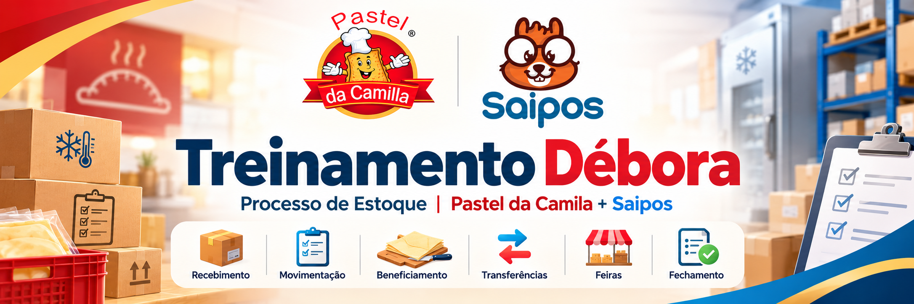
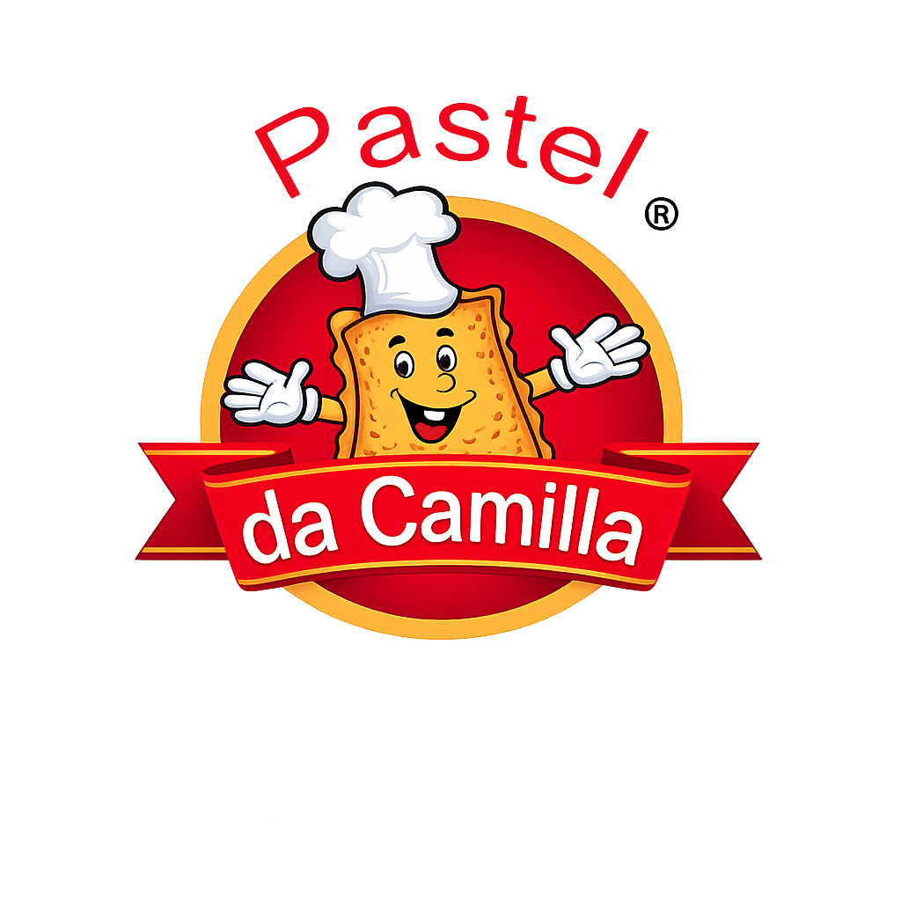
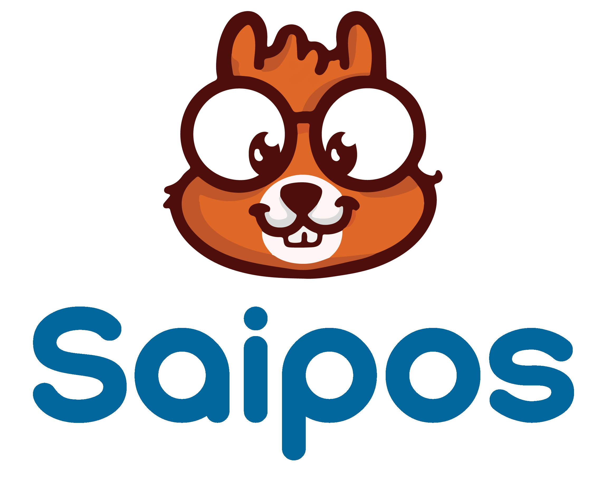

Treinamento Débora
Pastel da Camila • Estoque

Ajuda oficial integradaO que você vai fazer agora?
Escolha uma tarefa ou pesquise sua dúvida.
FÍSICO → REGISTRO → CONFERÊNCIA → EVIDÊNCIA
Continuar tarefa
Atividades principais
toque e façaProcessos
todos os processos atuaisSe der errado
não improviseTerminou certo quando...
Treinar
Aprenda com cenários operacionais e depois valide a prática supervisionada.
Como funciona
Leia o cenário, responda, veja o motivo e corrija o entendimento antes de avançar.
Importante
Acertar a teoria não transforma o processo em TESTADO. A prática real precisa gerar evidência.
Prática supervisionada
evidência obrigatória| Competência | Demonstrar | Evidência |
|---|